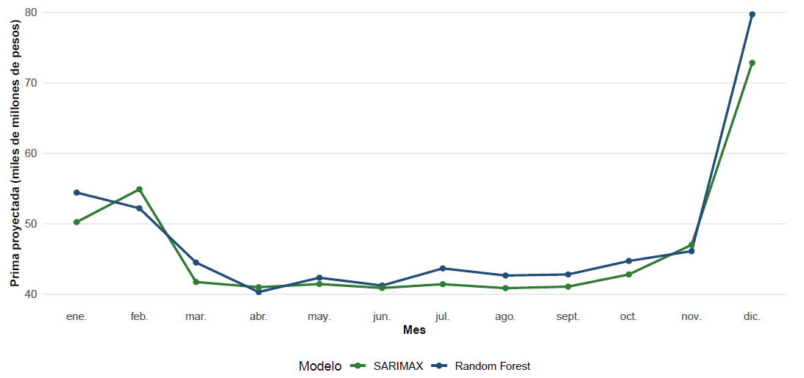

RESULTADOS
Para comparar los modelos, se evaluaron sus predicciones frente a los valores reales del periodo 2024-2025. Las métricas se calcularon sobre la serie en logaritmo, para que ambos modelos quedaran en la misma escala.
| Métrica | SARIMAX | Random Forest |
|---|---|---|
| RMSE | 0,0935 | 0,1158 |
| MAE | 0,0850 | 0,0930 |
| MAPE | 0,35% | 0,38% |
Nota: menores valores indican mejor desempeño predictivo.
El modelo SARIMAX(2,0,2)(1,1,2)[12] tuvo menores errores en RMSE, MAE y MAPE. Esto muestra que sus predicciones estuvieron más cerca de los valores reales.
El SARIMAX permite incluir directamente la Ley de Garantías como variable exógena, lo cual es importante para responder la pregunta del proyecto.
En Random Forest, la variable Ley_Garantias tuvo una importancia muy baja, con un %IncMSE de 0,06%. El modelo se apoyó más en los rezagos y en el comportamiento histórico.
Por estos resultados, el SARIMAX se selecciona como modelo principal para la predicción de 2026.
PREDICCIÓN 2026
Después de comparar el desempeño de los modelos en el periodo de prueba 2024-2025, se revisaron sus predicciones para 2026. Esto permite ver si ambos enfoques muestran un comportamiento parecido durante el año electoral y el periodo posterior.

Los dos modelos muestran un comportamiento parecido. En los primeros meses del año se observa una moderación en la producción de primas, especialmente en el periodo cercano a la Ley de Garantías.
Después, durante el segundo semestre, ambos proyectan una recuperación gradual, con un crecimiento más fuerte hacia el cierre del año.
Aunque las dos proyecciones son similares, el SARIMAX se toma como referencia principal porque fue el modelo que mostró mejor desempeño en el conjunto de prueba.
RESPUESTA FINAL
El proyecto buscó responder dos puntos principales: qué efecto tienen los periodos de Ley de Garantías sobre la producción mensual de primas de Fianzas y qué modelo permite pronosticar mejor el comportamiento de la línea durante 2026.
Los meses con Ley de Garantías presentaron un promedio menor de primas, con una diferencia aproximada de -12,05% frente a los meses sin Ley.
Al revisar la mediana, la diferencia fue mucho menor, cercana al -1,4%, lo que muestra que el comportamiento habitual de la serie no cambia de forma tan marcada.
Las pruebas estadísticas no mostraron evidencia suficiente para afirmar que las primas sean significativamente diferentes entre los periodos con y sin Ley.
Esto indica que la Ley puede estar asociada con una menor dinámica, pero no explica por sí sola todo el comportamiento de la producción.
El modelo SARIMAX(2,0,2)(1,1,2)[12] presentó mejor desempeño que Random Forest en el conjunto de prueba.
Además, permite incorporar la Ley de Garantías directamente dentro del modelo, por lo que se selecciona como modelo principal para la predicción de 2026.
En general, la Ley de Garantías sí muestra una señal sobre la producción de Fianzas, pero su efecto debe analizarse junto con la tendencia, la estacionalidad y el comportamiento histórico de la serie.
CONCLUSIONES
A partir del análisis exploratorio, la comparación de modelos y las predicciones para 2026, se obtuvieron las siguientes conclusiones del proyecto.
Los periodos de Ley de Garantías pueden estar relacionados con una menor producción promedio de primas.
Aun así, el comportamiento de la línea también depende de la tendencia histórica, la estacionalidad mensual y algunos meses atípicos.
El SARIMAX permitió modelar la tendencia, la estacionalidad y la variable de Ley de Garantías dentro de una misma estructura.
Por eso fue más adecuado que Random Forest para responder la pregunta principal del proyecto.
Las proyecciones muestran una producción más moderada durante parte del primer semestre de 2026, especialmente en los meses cercanos al periodo de Ley de Garantías.
Luego se espera una recuperación gradual en el segundo semestre, con un aumento más fuerte hacia el cierre del año.
Los resultados pueden apoyar la planeación y el seguimiento comercial de la compañía durante el año electoral.
Esto permite anticipar posibles periodos de menor producción y facilitar la toma de decisiones durante el periodo electoral y postelectoral.
CONTINUIDAD DEL ESTUDIO
Este estudio deja una base para seguir analizando cómo los periodos electorales se relacionan con la producción de Fianzas. Una siguiente etapa podría llevar el análisis a un nivel más detallado.
¿Qué pasaría si el análisis se realiza por ramo, sucursal o tipo de contrato para identificar qué segmentos de Fianzas son más sensibles a los periodos de Ley de Garantías?
Se podría revisar si el efecto cambia entre elecciones presidenciales y elecciones territoriales.
También se puede profundizar por ramo, sucursal o tipo de contrato para identificar dónde se presenta mayor sensibilidad al ciclo electoral.
A medida que avance 2026, se podrán comparar las predicciones con los valores reales y ajustar los modelos para futuros procesos electorales.
Con más datos, este análisis puede convertirse en una herramienta de seguimiento para anticipar escenarios comerciales en periodos electorales.